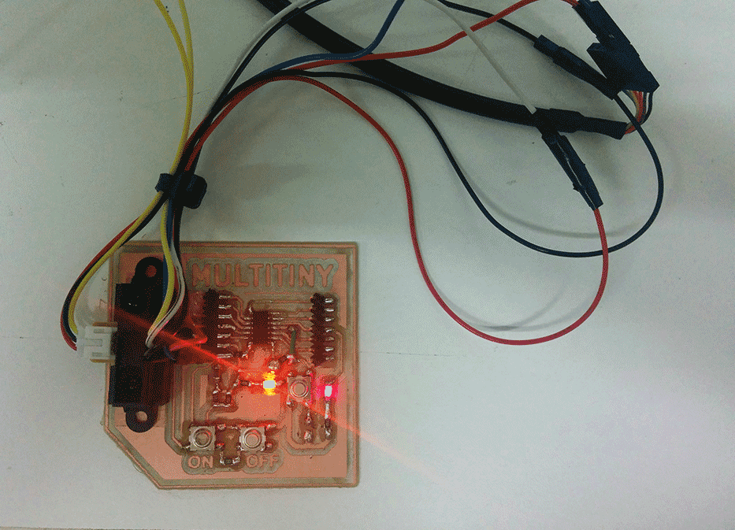

Exercise 11 - Output Devices
Assignment
Add an output device to a microcontroller board you've designed and program it to do something
Multitiny Project
The idea for Output assignment is create a new simple board based on Attiny44A-SSU board that can be help me to try different sensors for my final project. I call this project Multitiny: an Attiny board with a lot of pinouts simulating an Arduino Uno. For this exercise I tried to use KiCad. I know KiCad has a lot of problem with libraries. But I think that simple components should be found easely. I try to create an integrated and hierarchical project developing a board divided into 3 parts: an Hello echo + 3 pin (in this case for a Sharp Infrared) and two buttons (ON/OFF).
Kicad
CODE: First attempt
The main problem of Attiny concerns that is not possible the serial monitoring. To solve this problem i can monitoring the signal coming from the Infrared sensor changing the led intensity related to different distances between sensors and objects. So, the input will be provided by the infrared sensors (analog), the output will be represented by the led which change its light in a proportionally way by PWM out. The first attempt has been done using an Arduino Leonardo and a Potentiometer. the sketch works correctly. The second attempt has been done using the Hello Echo! (based on ATTINY44A-SSU).
int val=0;
void setup() {
// initialize digital pin 7 as an output.
pinMode(7, OUTPUT);
}
// modifying from digital to analog write in order to use PWM as output
// use the led as an output to detect the distance.
void loop() {
val = analogRead(13);
//Serial.println(val);
if(val>100)
{
analogWrite(7,255);
}
else
{
analogWrite(7,0);
}
delay(100);
}
}The sketch is correctly uploaded but doesn't work.
CODE: Second attempt
I try to use Hello Echo! with another sketch I found on http://www.frankensteingarage.it/blog/. I adapted the sketch originally conceived combining two potentiometers with three leds. I replaced one potentiometer with an infrared sensor.

int potpin = 1; //(pin 12) trimmer connected to analog pin 2 - comanda i colori
int potlum = 0; //(pin13) trimmer connected to analog pin 0 - comanda luminosità
int rpin = 6; //(pin 7)
int gpin = 7; //(pin 6)
int bpin = 8; //(pin 5)
int button = 10; //(pin 2)
float h;
int h_int;
int r=0, g=0, b=0;
int val=0;
int lumi = 0;
int swi = LOW;
void h2rgb(float h, int &R, int &G, int &B);
void setup() // run once, when the sketch starts
{
}
void loop() // run over and over again
{
val=analogRead(potpin); // Read the pin and display the value
lumi=analogRead(potlum); // Read the pin and display the value
//Serial.println(lumi);
h = ((float)val)/1024;
h_int = (int) 360*h;
h2rgb(h,r,g,b);
lumi = map(lumi, 1, 1024, 0, 100);
analogWrite(rpin, (int)((r*lumi)/100));
analogWrite(gpin, (int)((g*lumi)/100));
analogWrite(bpin, (int)((b*lumi)/100));
}
void h2rgb(float H, int& R, int& G, int& B) {
int var_i;
float S=1, V=1, var_1, var_2, var_3, var_h, var_r, var_g, var_b;
if ( S == 0 ) //HSV values = 0 ÷ 1
{
R = V * 255;
G = V * 255;
B = V * 255;
}
else
{
var_h = H * 6;
if ( var_h == 6 ) var_h = 0; //H must be < 1
var_i = int( var_h ) ; //Or ... var_i = floor( var_h )
var_1 = V * ( 1 - S );
var_2 = V * ( 1 - S * ( var_h - var_i ) );
var_3 = V * ( 1 - S * ( 1 - ( var_h - var_i ) ) );
if ( var_i == 0 ) {
var_r = V ;
var_g = var_3 ;
var_b = var_1 ;
}
else if ( var_i == 1 ) {
var_r = var_2 ;
var_g = V ;
var_b = var_1 ;
}
else if ( var_i == 2 ) {
var_r = var_1 ;
var_g = V ;
var_b = var_3 ;
}
else if ( var_i == 3 ) {
var_r = var_1 ;
var_g = var_2 ;
var_b = V ;
}
else if ( var_i == 4 ) {
var_r = var_3 ;
var_g = var_1 ;
var_b = V ;
}
else {
var_r = V ;
var_g = var_1 ;
var_b = var_2 ;
}
R = (1-var_r) * 255; //RGB results = 0 ÷ 255
G = (1-var_g) * 255;
B = (1-var_b) * 255;
}
Using the Hello Echo! and two potentiometers the sketch finally works.So I decided to upload the same sketch on the Multitiny.

Multitiny debug
Finally, I debugged the Multitiny connecting and installing the Sharp infrared sensor. So, I upload the sketch and the Multitiny works. The sensor detects the distance and the led change the intensity of its light.
Download
.EPS fileMultitiny schematics
Multitiny traces
{kind=link}
Multitiny cut
{kind=link}
Acknowledgment
I thank you very much to Gianni Terragni to help and support me in the development of the Multitiny project. I hope this board could be a useful basis for other people that can be